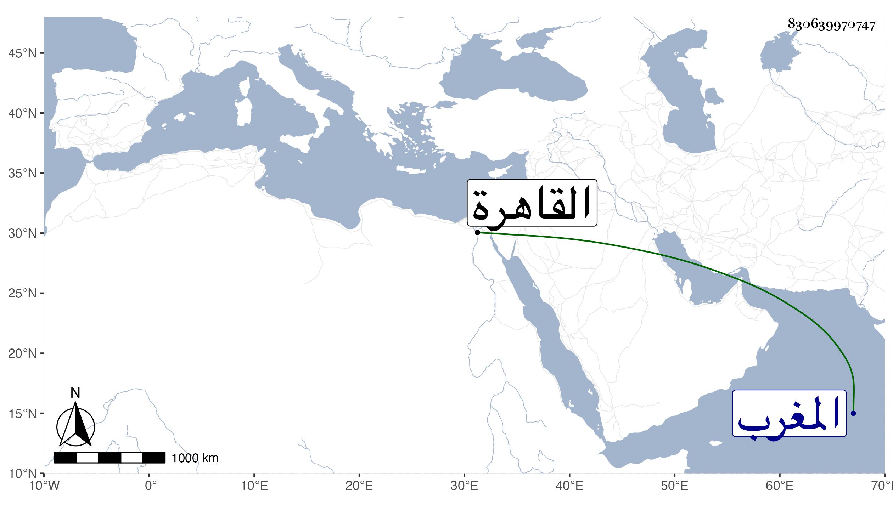

0902Sakhawi.DawLamic.ITO20230111-ara1.EIS1600.830639970747
Biography ID: 830639970747
أحمد بن عبد الخالق بن محمد بن خلف المجاصي بفتح الميم والجيم مخففا قرية في المغرب كان شاعرا ماهرا طاف البلاد وتكسب بالشعر وله مدائح وأهاج كثيرة وتنزل في صوفية سعيد السعداء . مات بالقاهرة في ربيع الآخر سنة اثنتين وقد ناهز الثمانين قال المقريزى في عقوده انه قال من حين جاوزت الاربعين أجد كل سنة نقصا في بدنى وقوتى وعزمى وأنه أنشده الكثير قال وشعره كثير .
